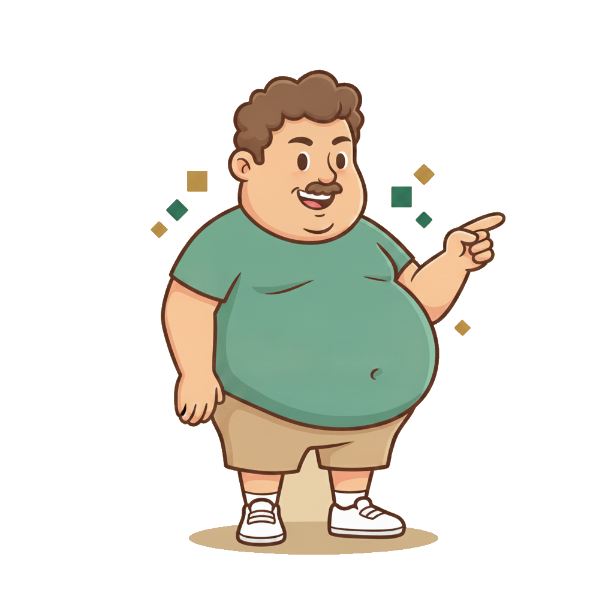
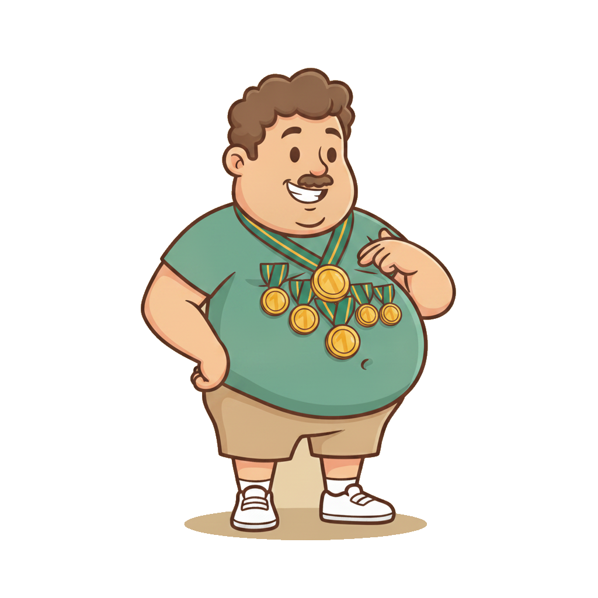
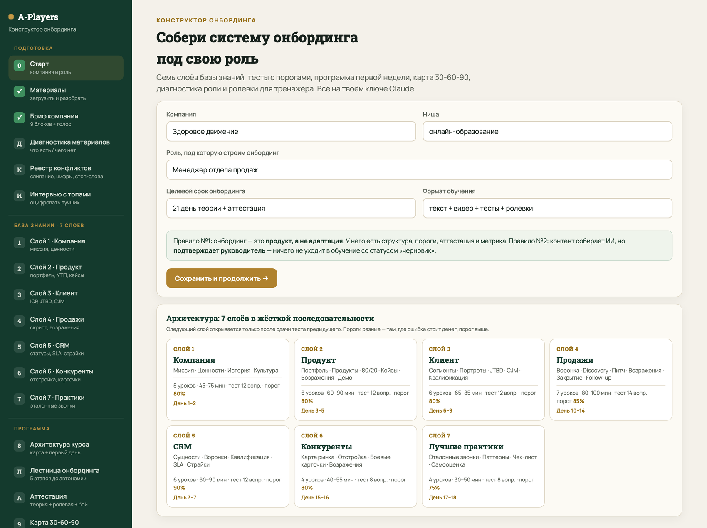
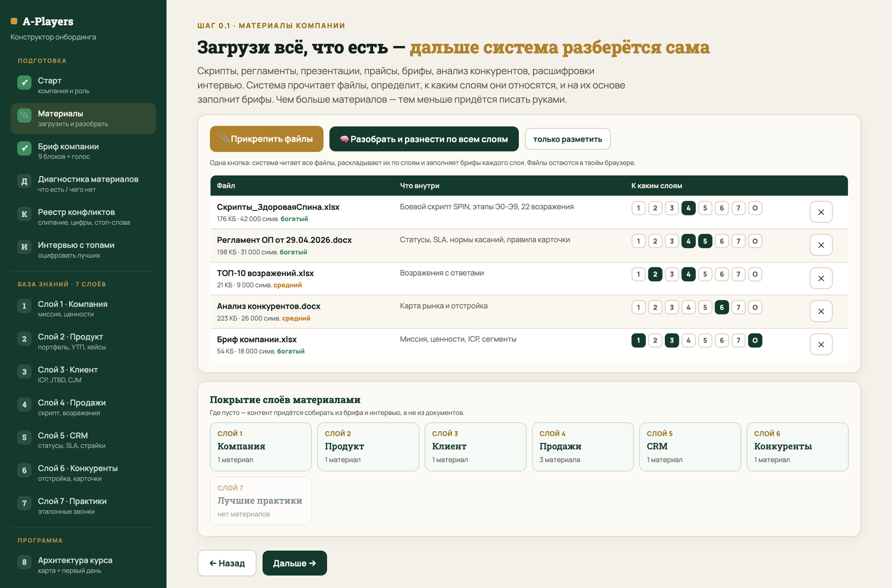
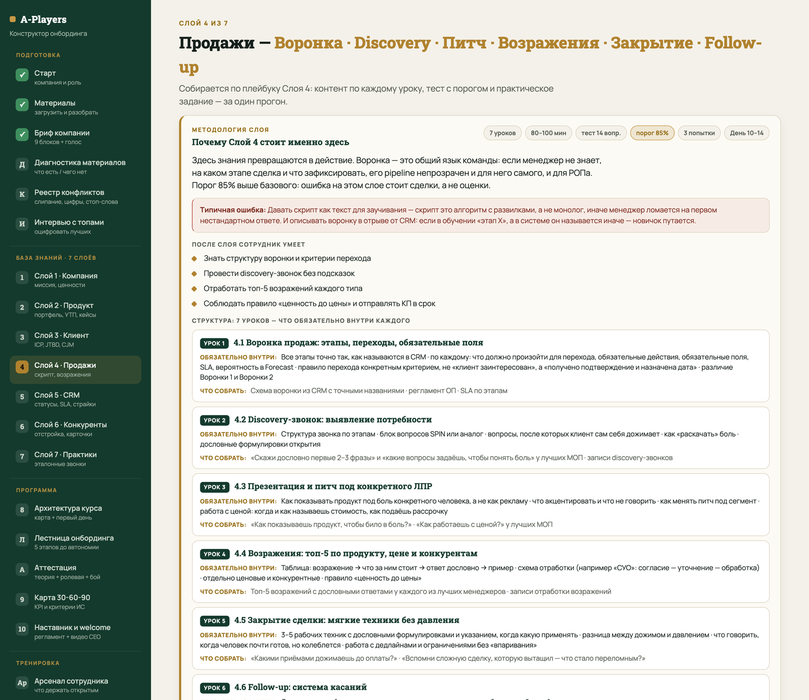
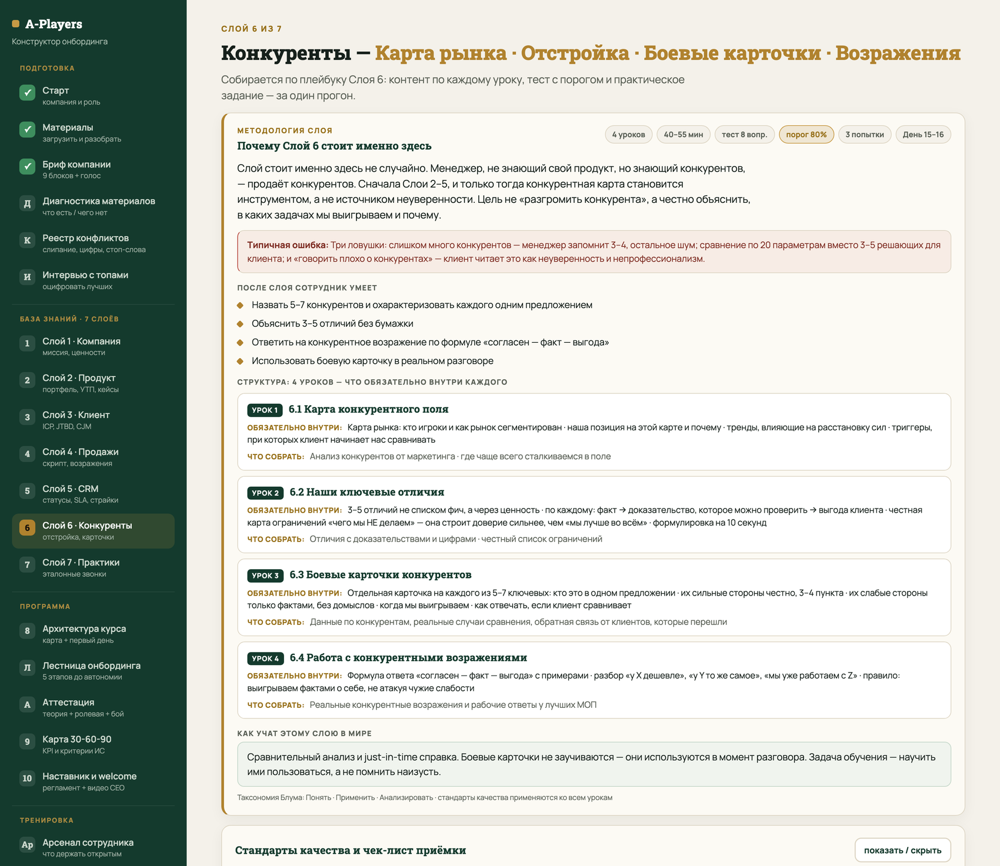
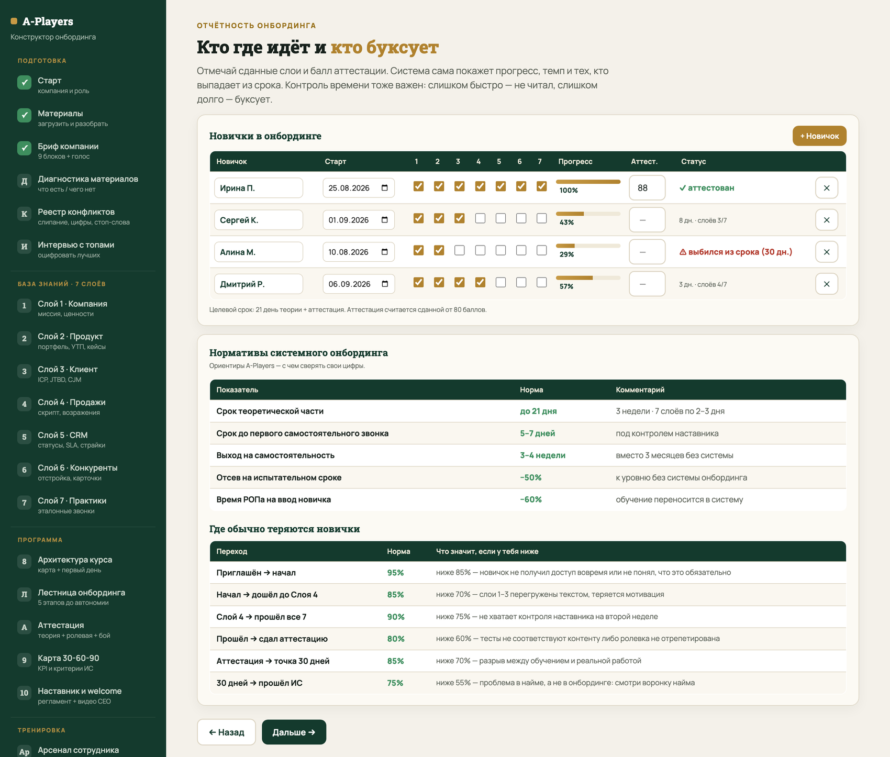
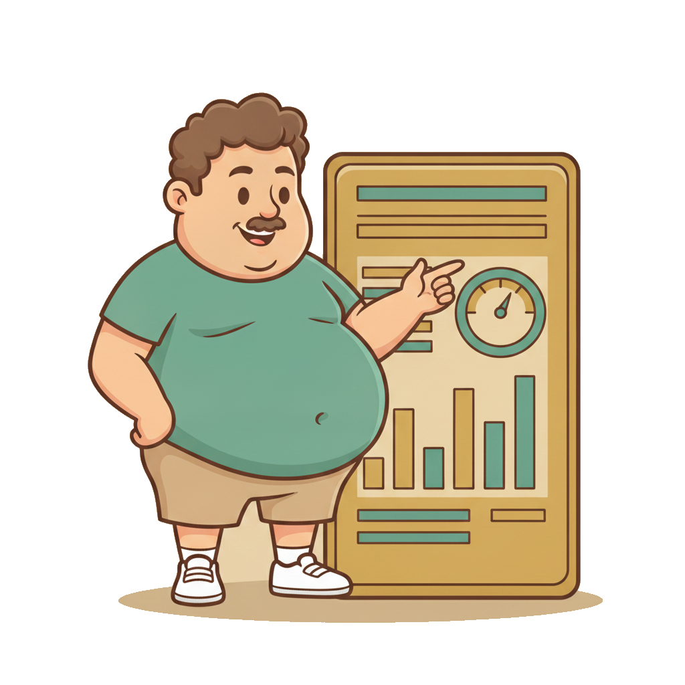

Онбординг
и Завод A‑Players
Новичок выходит на самостоятельность за 3–4 недели вместо 3 месяцев. Не потому что старается, а потому что попадает в систему: семь слоёв знаний, пороги, аттестация и наставник с чек-листом.

Нанял. Человек вышел.
Дальше начинается самое дорогое
- Воронку найма закрыли: научились доводить до оффера сильного
- Но сильный кандидат в слабой системе становится средним сотрудником
- Сегодня строим то, что превращает нанятого в работающего

Половина потерь от плохого найма — это не «взяли не того»
Это «взяли того и не ввели». Человек уходит на третьем месяце не потому, что слабый, а потому что три месяца угадывал, как у вас всё устроено.
Без системы
- 3 месяца до самостоятельности
- каждый учит по-своему
- руководитель тратит до 40% времени
- ушёл сильный — унёс знание
С системой
- 3–4 недели до самостоятельности
- один стандарт для всех
- обучение вынесено в систему
- знание остаётся в компании

Онбординг — это продукт,
а не адаптация
✗ Адаптация
«Посиди рядом с Машей, посмотри, как она работает». Есть доброжелательный коллега и нет ничего больше.
✓ Продукт
Есть структура, пороги прохождения, аттестация, метрика и срок. Его можно измерить, улучшить и передать другому.

Знание должно жить в системе, а не в головах

Наставничество не масштабируется.
Записи масштабируются
Как обычно
Один руководитель объясняет одному новичку. Второму новичку — заново. Третьему — уже устало и короче.
Как в системе
Лучшие сотрудники обучают всех одновременно — через записи своих звонков с разбором. Их приёмы становятся стандартом, а не личным секретом.
Это и есть Слой 7 — встроенное наставничество в масштабе. Побочный эффект: для лучших это статус и признание, а не «отвлекают от работы».

С чем сверять свои цифры
| Показатель | Норма | Комментарий |
|---|---|---|
| Срок теоретической части | до 21 дня | 3 недели · 7 слоёв по 2–3 дня |
| До первого самостоятельного контакта | 5–7 дней | под контролем наставника |
| Выход на самостоятельность | 3–4 недели | вместо 3 месяцев без системы |
| Отсев на испытательном сроке | −50% | к уровню без системы онбординга |
| Время руководителя на ввод | −60% | обучение переносится в систему |

Собрать систему онбординга
под свою ключевую роль
База знаний из 7 слоёв
37 уроков, 76 тестовых вопросов, пороги 75–90%, готово к заливке на платформу
Программа и аттестация
Лестница из 5 этапов, первая неделя по дням, аттестация в трёх блоках
Контроль и тренировка
Карта 30-60-90, чек-лист наставника, диагностика роли, сценарии ролевок

Пять фаз сборки
Это оглавление презентации и одновременно структура инструмента, которым вы всё это соберёте.

Онбординг разваливается не от лени.
Он разваливается от противоречий внутри
Контент написан красиво, тесты сданы — а новичок в поле получает разные ответы в разных местах и перестаёт доверять системе. Это лечится один раз, до сборки контента.

Одно название — три разные сущности
Что происходит с новичком
В Слое 2 он читает одно, в скрипте видит другое, в CRM третье. На звонке клиент спрашивает «а это тот курс или другой» — и менеджер плывёт.
Реальный случай: у одного продукта было два имени в разных документах, и обучение месяц учило людей путанице.
Одна метрика — четыре значения в четырёх документах
| Метрика | Что находим в источниках | Чем это опасно |
|---|---|---|
| Возраст компании | 6 лет / 8 лет / 13 лет / 18 лет | звучит на звонке, ловится клиентом |
| Средний чек | 25 000 / 28 000 / 34 000 / 35 000 | ломает расчёт плана и мотивации |
| Цена пакета | 45 000 в одном документе, 49 990 в другом | прямой конфликт с клиентом |
| Норма касаний | 5–12 / 12 / 8 по доскам / 60 в день | новичок не знает, что от него хотят |

Есть слова, которые меняют сам предмет сделки
Стоп-слова
Сотрудник говорит «идеальное тело» — и продал то, чего компания не продаёт. Говорит медицинский термин — и поставил диагноз, на что не имеет права.
Отдельный случай: слово, которое у одного продукта флагманское, а у другого прямо запрещено экспертом.
Зона владения
Кто продаёт первичку, кто ведёт базу, кто делает кросс и продления. За кем закреплён клиент и на какой срок.
Без этого правила два сотрудника звонят одному клиенту — и он уходит к конкуренту.

ИИ пишет черновик.
В обучение уходит только подтверждённое
Каждый урок несёт свой статус. Новичок видит, где твёрдый факт, а где ещё черновик — и это честнее, чем красивый текст, которому нельзя верить.

Порядок слоёв — не оглавление,
а методика
Новичок решает «я здесь свой»
за первые три дня
- Сотрудник, который верит в компанию, продаёт с гордостью — это слышно в звонке
- Ценности — не декларация, а скрытые критерии решений в нестандартных ситуациях
- Без Слоя 1 остальные шесть — просто инструкции
Как учат этому в мире
Storytelling и культурная адаптация. Идентификация строится нарративом: была проблема → основатель её увидел → создал → вот где мы сейчас.
Видео первого лица работает в разы сильнее текста. Ценность без кейса — просто слово, оно не западает.
Слой 1 без видения превращается
в набор лозунгов
Сильный кандидат оценивает не только оффер, но и то, куда идёт компания. Не можете объяснить это за две минуты — он выберет ту, которая может. Поэтому видение собирается прямо в конструкторе, по плейбуку.
Незнание продукта = неуверенность в голосе
= потерянная сделка
- Сначала карта портфеля, потом детали. Сначала лес, потом деревья
- Связка «характеристика → преимущество → выгода клиента», а не список свойств
- Правило 80/20: новичок учит не всё, а то, что даёт выручку
- Кейсы только реальные — выдуманные клиент проверит, а сотрудник почувствует
Как учат этому в мире
Retrieval practice и интервальное повторение. Продуктовое знание должно всплывать мгновенно: карточки, короткие проверки, возврат к топ-продуктам на 7-й и 30-й день.
Поворотный момент всего онбординга
Слои 1–2 учат пассивно: читай и запоминай. Слой 3 — первый слой активного применения. Сотрудник начинает думать не «как я продам», а «почему этот человек должен купить».
Что меняется
Сдвиг с продуктовой логики на клиентскую. Именно он отделяет A-игрока от среднего сотрудника.
Без него
Скрипты Слоя 4 звучат шаблонно. Человек читает правильные слова, но не попадает в конкретного клиента.

Скрипт — это алгоритм с развилками,
а не монолог для заучивания
Как учат этому в мире
Deliberate practice с немедленной обратной связью. Узкий навык, отработка, разбор сразу после. Ролевка без разбора в тот же день — потраченное время.
Норма — минимум 5 полных прогонов на разных типах клиента.

CRM — это не надзор.
Это операционная нервная система
- Сотрудник, который не умеет в CRM, теряет сделки — даже если отлично ведёт переговоры
- Три задачи слоя: операционная точность, прозрачность воронки, культура данных
- Самый высокий порог в программе — 90%
Как учат этому в мире
Learning by doing в реальной системе. Не «посмотри скринкаст», а «заведи тестовую сделку и проведи её по воронке». Плюс чек-лист под рукой, а не в памяти.
Кто знает конкурентов, но не знает свой продукт, —
продаёт конкурентов
Поэтому слой стоит шестым, а не вторым. Сначала Слои 2–5 — и только тогда конкурентная карта становится инструментом, а не источником неуверенности.
Сотрудник перестаёт изобретать велосипед
и начинает воспроизводить

Десять принципов, зашитых в каждый урок
Онбординг — не корпоративная библия.
Перегруз даёт отторжение

Учит не вопрос. Учит объяснение ответа
Состав теста
- 70% — выбор одного варианта из четырёх
- 20% — множественный выбор
- 10% — сопоставление
- минимум 2 вопроса на каждый урок
- 3 попытки, переход заблокирован до сдачи
Обязательное поле
К каждому вопросу — объяснение, почему ответ именно такой. Сотрудник видит его после ответа, и именно это его учит.
Запрещены: вопросы-ловушки, двойные отрицания, вариант «все ответы верны», неправдоподобные варианты.

Лестница из пяти этапов до самостоятельности
Что новичок держит открытым с первого часа
Ритм дня с первого дня
Сколько контактов в день, когда отчёты, за какое время первое касание нового лида. Новичок должен знать не только что делать, но и в каком темпе.
Тест проверяет, что прочитал.
Ролевка проверяет, что умеет
Сто баллов за наблюдаемые действия, а не за впечатление
| Критерий | Баллы |
|---|---|
| Держит рамку, говорит твёрдо, не в позиции просящего | 10 |
| Уложился в тайминг | 8 |
| Снял потребности и квалифицировал, зафиксировал ответы | 10 |
| Уверенно работает с инструментом и данными клиента | 12 |
| Создал осознание разрыва — эмоциональный пик разговора | 15 |
| Питч под разрыв: выбрал релевантное, вёл диалог, а не лекцию | 15 |
| Возражения: эмоция → логика → действие, довёл до готовности | 15 |
| Закрытие: техника, призыв и молчание после цены | 8 |
| Зафиксировал следующий шаг и завёл в CRM | 7 |
KPI новичка — это число.
«Хорошо влился в команду» — не KPI
Прошёл систему
все слои сданы, аттестация пройдена, первые самостоятельные контакты под контролем, базовая активность на норме
Вышел на траекторию
около 70% личного плана, конверсия на нижней границе нормы, работает без сопровождения
Закрыл испытательный
100% плана, целевая конверсия, средний чек на норме, оценка качества в зелёной зоне
Наставник отвечает не за обучение,
а за перенос в работу
- Обучение — на платформе. Наставник — про применение
- Свой чек-лист по дням: что проверить, что объяснить, что подтвердить
- Три контрольные точки прослушки: день 3, день 7, день 14
Чек-лист наблюдения за звонками
День 3 — усвоил стандарты, структуру и дисциплину.
День 7 — уверенность в диалоге, потребность, возражения.
День 14 — готовность к самостоятельной работе.
По 8 наблюдаемых критериев на точку, оценка «да / частично / нет», в конце — заключение из трёх вариантов.
Восемь провалов, которые повторяются у всех
Курс — это то, что проходят.
Завод — это то, где работают
Разница принципиальная. LMS заканчивается сертификатом. Рабочее место живёт вместе с сотрудником: он возвращается туда за ответом на третьем месяце и на третьем году.
Отвечает по вашей базе — и не выдумывает
- Вопрос в три часа ночи получает ответ из ваших регламентов, а не из интернета
- Не знает ответа — так и говорит, вместо правдоподобной выдумки
- Снимает с руководителя поток одинаковых вопросов первого месяца
Почему это важнее, чем кажется
Новичок не задаёт половину вопросов — боится выглядеть глупо. И принимает решения наугад. AI-наставник убирает этот барьер: у него можно спросить что угодно и сколько угодно раз.

Тренажёр не проверяет знание скрипта.
Он снимает страх первого звонка
Показывает не «слабый или сильный»,
а сколько процентов результата теряется
Как устроено
18 моделей поведения роли, сгруппированных по четырём блокам. По каждой — пять описательных вариантов от лица сотрудника, от «делаю на уровне эксперта» до «только с руководством».
Что на выходе
Уровень A–E с весами по каждой модели и процент теряемого результата. Плюс персональный план развития: конкретное действие для роста на уровень.
Конструктор онбординга: 26 шагов в пяти фазах
- Плейбуки Завода зашиты внутрь — промпты писать не нужно
- Над каждым слоем — методичка: что обязательно в каждом уроке
- Работает на твоём ключе Claude

Загружаешь всё, что есть —
система сама разносит по слоям

Внутри слоя — методичка, свой бриф
и подсветка пробелов

Что нашлось в материалах,
а на что нужен твой ответ
- Зелёным — ответ вытащен из материалов, с указанием файла
- Оранжевым — в документах этого нет, впиши или надиктуй
- Так видно, что запрашивать у РОПа и CEO, а не гадать

Сначала уточняющие вопросы,
потом глубокий ресерч
На слоях «Продукт», «Клиент» и «Конкуренты» система может пойти в открытые источники. Но сначала задаёт 4–6 вопросов — то, чего нельзя узнать снаружи и чего нет в твоих материалах. Иначе получится ресерч «вообще», а не про тебя.
Кто где идёт и кто буксует

Слишком быстро — не читал.
Слишком долго — буксует
Скорость
Прошёл четыре слоя за два дня — почти наверняка листал. Система подсвечивает такие случаи отдельно.
Застревание
Выбился из целевого срока — сигнал наставнику, а не повод ждать до испытательного.
Где теряются
Есть нормативы по каждому переходу: где новички отваливаются чаще всего и что это значит.

План внедрения на восемь недель
Собери онбординг под свою ключевую роль
Материалы
Загрузи всё, что есть по роли, нажми «разнести по слоям» и посмотри карту покрытия — где пусто
База знаний
Закрой пробелы в брифах слоёв, собери все семь слоёв с тестами, выгрузи одним файлом
Программа
Собери лестницу, аттестацию и карту 30-60-90. Заведи первого новичка в отчётность
Принеси систему, по которой новичок дойдёт до результата без тебя.
Новичок не должен угадывать,
как у вас работают
Найм доводит сильного человека до двери. Онбординг решает, станет он A-игроком или просто ещё одним сотрудником, который «не подошёл».
Три недели вместо трёх месяцев — это не про скорость. Это про то, что человек успевает поверить в компанию, пока ещё горит.